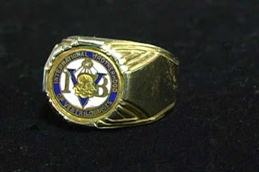

The Story of the Ring
8/14/2009
{kind=link}

By Tom Farrell
I hadn't even heard of Jimmy Wallis on that night in July 2008, when my wife and I saw Terry Fator at the Vent Haven ConVENTion. My 72nd birthday was the next day, I hadn't done vent in 20 years and we were just there to see a good show. Terry was absolutely incredible. He brought the house down and everybody was on their feet with a resounding standing ovation. As we left the convention, my wife said, "You used to be so good at that, you should get into that again". Wives have that wonderful, nurturing knack of saying the right thing at the right time. I was bitten by the vent bug again.
But, I had so many questions racing through my mind. Could I still do vent? Was my figure ( an Insull figure which I bought from W.S. Berger in the '50s) still in working order? He had been languishing in his trunk for 20 years as bookings dried up and other business forces grabbed my attention. Who could I get to fix him? I started searching the internet for a new figure, and I sent for The Maher Course Of Ventriloquism to brush off 20 years of inactivity, and recapture my vent skills. One day I saw an ad on the internet, "4Sale - Wally - looking for a new home". The picture showed an Insull figure, much like mine, but with many more features. The seller was Jimmy Wallis. So, not knowing if it was an old posting or not, I e-mailed Jimmy.
Jimmy answered that the figure was still for sale. He came with two heads - one from Maher in Michigan in the '50s, the other from W.S. Berger in the early '60s. He said the body was by Foy Brown and that a case was also included. The price that Jimmy wanted was far more than I could afford, but he said to make him an offer, and he promised not to laugh or cry.
As we exchanged e-mails in the following months, we formed a friendship. We found out that we both were about the same age (he said he would be 70 in March), we both had known W.S. Berger and had both been in the IBV. He lived in Arlington Texas and when he found out that I lived in Cincinnati Ohio, he recalled opening the Playboy Club here. He also played the Las Vegas Hilton with Suzanne Summers, Debbie Reynolds and Rip Taylor, and many other venues throughout the United States while I stayed mostly local. He said that he had retired 8 years ago after a hip replacement.
As we learned more and more about each other, our friendship grew. We would exchange huge long e-mails about vent, our selves and families - everything. We would kid each other unmercifully. At one time he said, "I don't often 'click' with people I don't know, but I like you". Every few months he would come up with a new price for the figure, but it was always more than I could afford. I kept asking him to send me a picture of the other head, but he never had the time to take one.
Finally he did and while going through the closet looking for it, he found his old IBV pin. He was so excited he sent me a picture of the head and the pin. I had lost my pin in the '70s. On March 28, 2009, Jimmy e-mailed "What would you say if I told you - you can have Wally, the extra head and the case for ...", and he quoted a jaw dropping "give away" price. He then said "I just ask that when you're through doing vent, that he goes to Vent Haven".
Naturally I said "yes". Jimmy said that due to unexpected circumstances his good friend would handle the shipping for him. I thought that was odd and said, "Are you OK?" He e-mailed back "I'm calm, collected and ready. Major problem. Can't comment. Require your trust and best wishes". That really confused me and I contacted his friend. She told me that Jimmy was "putting his affairs in order in case he is incapacitated for a long period of time."
I waited, and when many weeks went by without hearing, I e-mailed his friend. On April 17th, 2009 she called me and told me that Jimmy had passed away on April 13th. I was stunned. She told me that Jimmy wanted me to give his figure a good home and she would still ship the figure and extra head, but it would take a few more weeks. I asked her if she could send me Jimmy's IBV pin as a remembrance - which she did. I have had the pin put into a ring which I wear on my right hand to remind me of my own IBV days, and my good friend, Jimmy Wallis, and when I use that hand to bring Jimmy's figure to life - they are, in a way, back together again !
Note: Jimmy's figure is now being refurbished by Kevin Detweiler: www.animatedpuppets.blogspot.com .